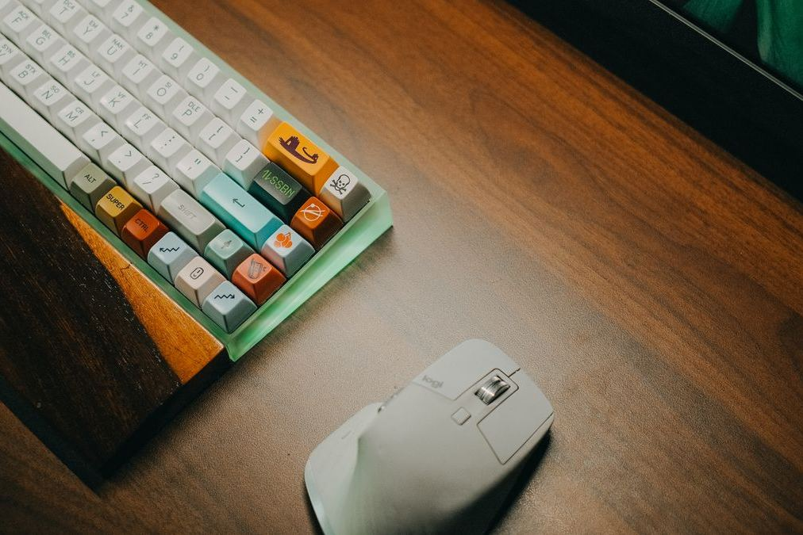

Best Ergonomic Vertical Mice (2026): Pick by Hand Size
A vertical mouse turns your hand into a handshake position, which reduces how much your forearm twists. The biggest factor in whether one feels right is fit: a mouse that's too big or too small for your hand forces you to grip harder, which defeats the point. This guide compares five popular ergonomic mice sold on Amazon US, with a simple hand-length chart to narrow the choice.
Quick picks
| Product | Best for | Amazon |
|---|---|---|
| Logitech Lift Vertical | Small to medium hands | Check price |
| Logitech MX Vertical | Larger hands | Check price |
| ProtoArc EM11 NL | Trying vertical cheaply | Check price |
| Evoluent VerticalMouse 4 | Steepest, most vertical grip | Check price |
| Logitech MX Master 3S | Not ready for vertical | Check price |
How to choose
1. Measure your hand
Measure from the crease of your wrist to the tip of your middle finger. Under about 7.5 in (19 cm) usually suits smaller vertical mice like the Logitech Lift or ProtoArc EM11; longer hands suit the MX Vertical. The chart below maps hand length to each mouse.
2. Steeper isn't always better
More vertical angles reduce forearm rotation further but take longer to get used to. Most mainstream vertical mice sit around 57–58°; Evoluent's near-vertical shape is steeper. Give any vertical mouse a week or two before deciding.
3. Battery or rechargeable
AA-powered mice (like the Lift) run for many months and you never wait on a charge; rechargeable ones (MX Vertical, ProtoArc) save on batteries but need plugging in every few weeks.
4. Left-handed?
Only some models come in a left-handed version. Logitech sells a left-handed Lift in graphite; most others here are right-handed only.
5. This isn't medical treatment
An ergonomic mouse may make you more comfortable, but it doesn't treat carpal tunnel syndrome. See a clinician for persistent pain, tingling or numbness.
Specs side by side
| Product | Hand size | Grip angle | Power | Left-handed | Price tier |
|---|---|---|---|---|---|
| Logitech Lift Vertical | Small to medium (under about 7.5 in) | 57° | 1× AA (up to 24 months) | Yes (graphite) | Mid-range |
| Logitech MX Vertical | Medium to large (over about 7.5 in) | 57° | Rechargeable 240 mAh, USB-C | No | Mid-range |
| ProtoArc EM11 NL | Small to medium (under about 7.5 in) | 58° | Rechargeable 500 mAh, USB-C | Not listed | Budget |
| Evoluent VerticalMouse 4 | Small or regular versions | Near-vertical (steeper than 57°) | Wired, or wireless with USB receiver | Separate models; check the listing | Premium |
| Logitech MX Master 3S | Medium to large | Sculpted (not vertical) | Rechargeable, USB-C | No | Mid-range |
From manufacturer pages, spec sheets, listings and reviews; see the sources under each mouse. Grip angles are manufacturer or reviewer figures.
The shortlist
Small to medium hands
1. Logitech Lift Vertical
The Lift puts a 57° vertical grip in a compact body with quiet clicks and a soft thumb rest. It's one of the best-selling ergonomic mice on Amazon, it runs on a single AA battery that Logitech rates at up to 24 months, and it's one of the few vertical mice sold in a left-handed version.
What we like
- Sized for small-to-medium hands
- Left-handed version available
- Bluetooth or Logi Bolt receiver
Trade-offs
- Too small for large hands
- Uses an AA battery rather than charging
What other reviewers found
- Tom's Hardware: praised its ergonomics, noting it's designed for smaller hands and that people with large hands are better off with the MX Vertical.
Skip it if: Your hand is longer than about 7.5 in.
Check Logitech Lift Vertical on Amazon →Spec sources (checked Nov 2, 2026): B&H spec
Larger hands
2. Logitech MX Vertical
The larger sibling of the Lift: the same 57° angle in a bigger body, with a rechargeable battery, USB-C charging and switching between up to three computers. It's right-handed only.
What we like
- Sized for larger hands
- Rechargeable via USB-C
- Switches between computers
Trade-offs
- Right-handed only
- Thumb buttons are awkwardly placed for some
What other reviewers found
Skip it if: You have small hands or are left-handed.
Check Logitech MX Vertical on Amazon →Spec sources (checked Nov 2, 2026): Logitech data sheet
Trying vertical cheaply
3. ProtoArc EM11 NL
A low-cost rechargeable vertical mouse that's become one of Amazon's top sellers in the category. It has a 58° tilt, connects to up to three devices over Bluetooth or its USB receiver, and is aimed at hands under about 7.5 in. Reviewers call it a good low-cost way to find out whether vertical suits you, with a basic sensor and a coating that may not age well.
What we like
- Very low price
- Rechargeable, three-device switching
- Good fit for smaller hands
Trade-offs
- Basic sensor (up to 2400 dpi)
- Rubberized coating may wear
What other reviewers found
- AppleInsider: described it as a low-cost step toward an ergonomic workspace.
- YugaTech: liked the comfort for the price but flagged limited DPI options, a learning curve and a coating that may not age well.
Skip it if: You have large hands or want a precise sensor for design work.
Check ProtoArc EM11 NL on Amazon →Steepest, most vertical grip
4. Evoluent VerticalMouse 4
Evoluent was one of the first vertical mouse makers, and the VM4 has a steeper, near-vertical shape than the 57° Logitech models, which reduces forearm rotation further. It comes in small and regular sizes, wired or wireless, with programmable buttons. We didn't find a recent independent review, and it takes longer to adapt to than gentler designs.
What we like
- Steepest grip in this group
- Size options
- Programmable buttons
Trade-offs
- Longer adjustment period
- Pricey for its dated design
Skip it if: You want something that feels familiar on day one.
Check Evoluent VerticalMouse 4 on Amazon →Spec sources (checked Nov 2, 2026): ErgoCanada spec page
Not ready for vertical
5. Logitech MX Master 3S
Not a vertical mouse, but a sculpted shape that supports your palm, with a fast scroll wheel, a thumb wheel and quiet clicks. A sensible step if a full vertical grip feels too unfamiliar, though it reduces forearm twisting less than the mice above.
What we like
- Comfortable sculpted shape
- Horizontal thumb scroll wheel
- Quiet clicks
Trade-offs
- Less forearm rotation reduction than a vertical mouse
- Right-handed only
Skip it if: You specifically want to reduce forearm twisting.
Check Logitech MX Master 3S on Amazon →Which mouse fits your hand
Measure from your wrist crease to the tip of your middle finger, then use this as a starting point:
| Hand length | Good fits in this guide |
|---|---|
| Under about 6.5 in (16.5 cm) | Logitech Lift, ProtoArc EM11 NL, Evoluent VM4 Small |
| About 6.5–7.5 in (16.5–19 cm) | Logitech Lift, ProtoArc EM11 NL, Evoluent VM4 regular |
| Over about 7.5 in (19 cm) | Logitech MX Vertical, Logitech MX Master 3S, Evoluent VM4 regular |
Based on each maker's or reviewer's sizing guidance. Grip style matters too: if you rest your whole palm on the mouse, size up.
Why some mice aren't here
Earlier versions of this guide included the Anker vertical mouse. It wasn't showing among the top vertical mice on Amazon US when we checked, so we replaced it with the ProtoArc EM11 NL, which is far more widely bought and has independent reviews. Cheap unbranded vertical mice were left out when we couldn't find specs or reviews to check.
FAQ
Is a vertical mouse good for wrist pain?
Many people find a vertical grip more comfortable because it reduces forearm twisting, but it isn't a treatment. If you have ongoing pain, tingling or numbness, see a clinician.
How long does it take to get used to a vertical mouse?
Usually a few days to two weeks. Precision feels off at first; keep the pointer speed a little lower until your hand adapts.
Do vertical mice work for left-handed people?
Only some. The Logitech Lift has a left-handed version; most others here are right-handed only, so check before buying.